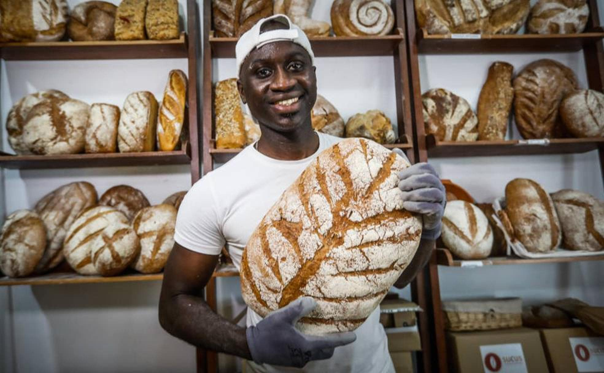
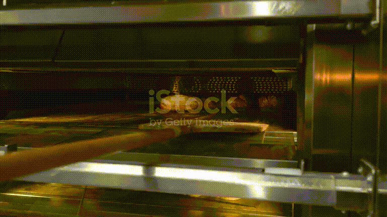

En MERERY somos una pequeña panadería ubicada en el corazón de Granada, Andalucía. Nuestra historia comenzó con una pasión por los dulces que se remonta a nuestra infancia, cuando nos deleitábamos con los macarons que preparaban nuestras abuelas. Estos recuerdos dulces y nostálgicos nos inspiraron a convertir esa pasión en una profesión.
Desde aquellos días de infancia, nuestro amor por la repostería y la panadería solo ha crecido. Decidimos abrir MERERY para compartir esos sabores y emociones con nuestra comunidad. Cada día, elaboramos una selección de productos caseros, desde los tradicionales macarons hasta panes artesanales, todo hecho con los ingredientes más frescos y mucho amor.
Nuestra misión es crear experiencias únicas y deliciosas para nuestros clientes, manteniendo siempre la esencia de lo casero y lo auténtico. En MERERY, cada bocado es una invitación a recordar los momentos más dulces de la vida. Así que, ya seas un vecino de siempre o alguien que pasa por Granada, te invitamos a descubrir el sabor de nuestra historia.
En MERERY, todo lo que hacemos es casero. Desde nuestras recetas tradicionales hasta los ingredientes frescos que usamos, cada producto está hecho con cariño y dedicación. Creemos que el sabor de lo casero no tiene igual, y nos esforzamos en mantener esa esencia en todo lo que ofrecemos. 🥐🍞🍰
Cada día, nuestras manos amasan, hornean y preparan delicias que hacen que nuestros clientes sientan el amor y la tradición en cada bocado. ¿Ya probaste alguno de nuestros panes recién horneados o nuestros dulces macarons?
